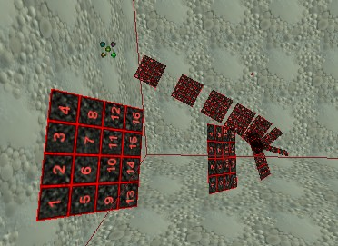
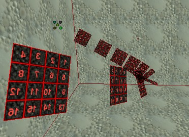
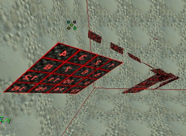

SpriteEmitter
Used in Emitters to spawn particle sprites. This all-around ParticleEmitter can be used to create smoke, fire, water falls, dust clouds and many other effects.
Some useful combinations of settings can be found in our ParticleEmitter cookbook.
Properties
The SpriteEmitter class adds only one group to the ParticleEmitter properties.
Sprite Group
- vector ProjectionNormal
- Normal vector of the projection plane used when UseDirectionAs is set to PTDU_Normal, PTDU_UpAndNormal or PTDU_RightAndNormal.
- EParticleDirectionUsage UseDirectionAs
- Here you can specify how the 2D image should be displayed. See EParticleDirectionUsage enum below for details.
Enums
EParticleDirectionUsage
- PTDU_None
- Always rotates the sprite towards the viewer. The sprites will always look the same, no matter what direction they are viewed from. Size → UniformSize will be forced to True, so only the X component of Size → SizeScale can be used to scale the sprites.
UseDirectionAs = PTDU_None |
- PTDU_Up
- Also rotates the projection plane towards the viewer, but in a special way, so the particle's movement direction will always be in the projection plane.

UseDirectionAs = PTDU_Up |
- PTDU_Right
- Like PTDU_Up, but the particle texture is rotated 90°.

UseDirectionAs = PTDU_Right |
- PTDU_Forward
- The particle's particle's movement direction is used as the projection plane's normal vector.
UseDirectionAs = PTDU_Forward |
- PTDU_Normal
- The ProjectionNormal is used as the projection plane's normal.
UseDirectionAs = PTDU_Normal |
- PTDU_UpAndNormal
- This is similar to PTDU_Normal, but the particles can only be rotated around the axis given by the particles' movement direction.
UseDirectionAs = PTDU_UpAndNormal |
- PTDU_RightAndNormal
- Same as PTDU_UpAndNormal, but the texture is rotated 90°.

UseDirectionAs = PTDU_RightAndNormal |
- PTDU_Scale
- Like PTDU_None, but allowes you to turn off Size → UniformSize so the sprites can have different scaling values for X and Y.